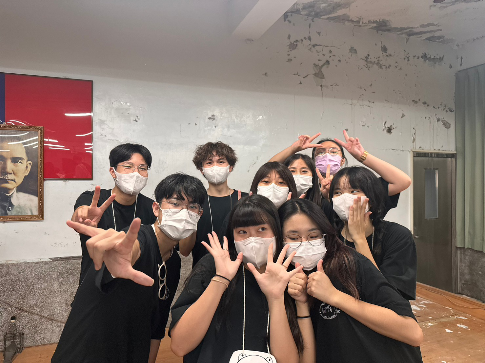

關於我
大家好，我是楊育霖，朋友都叫我ㄌㄌ，目前就讀中原大學資訊管理學系。平時喜歡玩吉他，之前當過吉他社社長。
我對科技、程式與實作特別有熱情，喜歡把想法透過程式碼或工具變成真正能運作的東西。
最近我主要在學Unity以及像素美術，正在試著獨立開發一款像素風格的卡牌遊戲。
舉辦社團活動
社團表演過程
個人經歷
此為高中所參加的虛擬交易競賽，我特意學習了股票觀念和投資策略，提高了對股票市場的了解，並學會如何降低風險。
此為TQC企業人才技能合格證書，這是等級最高的「專業級」為此學了不少文書處理的知識，最終成功考取。

這是竹縣政府邀請各學校的社團聯合展演，此為當時我們參加的證書，在那時我學會了學習如何克服緊張，分享熱情和努力。